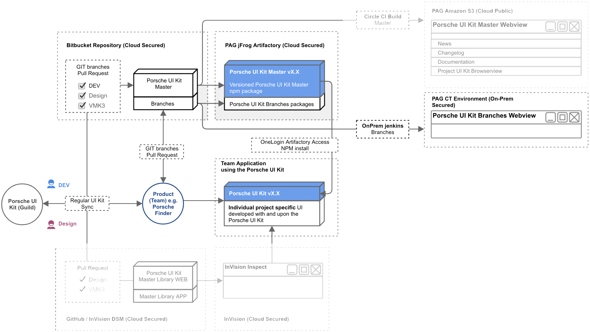

Porsche UI Kit Introduction
The Porsche UI Kit is
- a structured collection of reusable UI elements with corresponding code and guidelines
- both available for developers and designers of My Porsche and other digital Porsche properties
- for developers accessible as versioned NPM package via jFrog Artifactory and commonly developed via Bitbucket Cloud
- for designers accessible as versioned sketch library
- organised by marketing communications at core level but distributed and developed collaboratively as community
- can be self-independently used and modified by different digital Porsche applications and projects
- continiously synchronized within the bi-weekly as Porsche UI Kit Guild
Our Vision
Unite every digital Porsche product around a common Porsche Design System
Our Mission
Give every designer and frontend developer working for the digital Porsche ecosystem
a high-quality and brand-aligned collection of design elements with complemented guidance
to improve their design workflow in efficiency and focus on customer needs.
